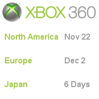

CESPage.com Xbox Weekly Update Fifteen
Xbox 360 Launch Continues, Xbox 360 Quick Review and Customise Faceplate
By CESPage.com Xbox, Published 4th December 2005
Xbox 360 Launch Continues
2nd December 2005 saw the launch of the Xbox 360 in Europe at midnight with a press-only event held in London for the UK, some stores were open at midnight but the
majority opened a couple of hours early in the morning. CESPage.com Xbox picked up an Xbox 360 at 8:00am on that day at Game in Newcastle there was quite a queue
outside the store with the first 10 people or so those without pre-orders but managed to pick up a console - the Xbox 360 Core System and also purchased a Hard Drive
with their console also, most people bought Project Gotham Racing 3 and / or Perfect Dark Zero, both of these games by CESPage.com Xbox also.
Not being a major game player or hard core gamer you can still challenge the webmaster of CESPage.com Xbox just invite RoguePlanetoid as a friend to play online!
Next week will be the last weekly update from CESPage.com Xbox but the website will still be updated with the latest Games and Hardware information as it becomes
available as well as many articles to look forward to also, Japan will also receive the Xbox 360 by then also, with other territories receiving theirs in early 2006.

Xbox 360 Quick Review
December 2nd was the launch of Xbox 360 in the UK and CESPage.com Xbox got theirs, the first thing tried was the new dashboard which is a major improvement over the
original Xbox dashboard interface, with Xbox Live, Games, Media and System blades all the console functions and options can be accessed this way. The Xbox Live blade
allows access to the Xbox Live Marketplace where items such as game demos like Kameo and Madden NFL 2006 plus trailers for the film Aeon Flux and games like
Perfect Dark Zero and Project Gotham Racing 3.
The Games blade allows for the playing of Xbox Live arcade games with one included on the hard drive of Hexic HD a fun and playable game from the creator of Tetris.
The Media blade allows for playing of music and viewing of pictures, the main feature is the Media Center Extender which when the console is connected to a
Windows XP Media Center PC allows for the accessing of content on that computer including Music, Pictures and Videos.
Customise Faceplate
The Xbox 360 allows for the replacement of the front section of the console with the removable Faceplates there are a variety of faceplates available to buy for the console from 14.99 GBP from most Game retailers, however this is not the only way of getting a unique look for an Xbox 360 Console. The console can also be customised by purchasing a custom vinyl to go over the front of the default faceplate of the console, CESPage.com Xbox obtained one for the Xbox 360 and gives a custom look to the console, they can be purchased from FaceTags.com or 360Covers.com, with the latter being where the CESPage.com Xbox vinyl was obtained from, you can also purchase custom ones also your own photo or image could be used, you can still purchase a faceplate from elsewhere but this is another alterative that may be a good alternative.